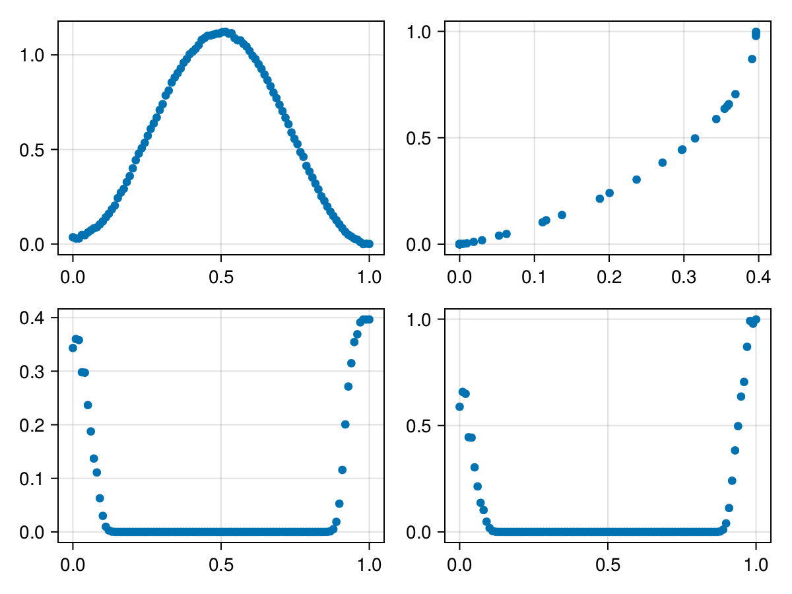

How To get P-Values for Mass-Univariate LMM
There are currently two ways to get p-values for LMMs: Walds t-test & likelihood ratio tests (mass univariate only).
Setup
using MixedModels, Unfold # we require to load MixedModels to load the PackageExtension
using DataFrames
using UnfoldSim
using CairoMakie
data_epoch,evts = UnfoldSim.predef_2x2(;n_items=52,n_subjects=40,return_epoched=true)
data_epoch = reshape(data_epoch, size(data_epoch, 1), :) #
times = range(0,1,length=size(data_epoch,1))0.0:0.010101010101010102:1.0Define f0 & f1 and fit!
f0 = @formula 0~1+A + (1+A|subject);
f1 = @formula 0~1+A+B + (1+A|subject); # could also differ in random effects
m0 = fit(UnfoldModel,Dict(Any=>(f0,times)),evts,data_epoch);
m1 = fit(UnfoldModel,Dict(Any=>(f1,times)),evts,data_epoch);Unfold-Type: UnfoldLinearMixedModel
formula: Dict{DataType, Tuple{StatsModels.FormulaTerm{StatsModels.ConstantTerm{Int64}, Tuple{StatsModels.ConstantTerm{Int64}, StatsModels.Term, StatsModels.Term, StatsModels.FunctionTerm{typeof(|), Vector{StatsModels.AbstractTerm}}}}, StepRangeLen{Float64, Base.TwicePrecision{Float64}, Base.TwicePrecision{Float64}, Int64}}}(Any => (0 ~ 1 + A + B + :((1 + A) | subject), 0.0:0.010101010101010102:1.0))
Useful functions:
design(uf) (returns Dict of event => (formula,times/basis))
designmatrix(uf) (returns DesignMatrix with events)
modelfit(uf) (returns modelfit object)
coeftable(uf) (returns tidy result dataframe)
Likelihoodratio
uf_lrt = likelihoodratiotest(m0,m1)
uf_lrt[1]| model-dof | deviance | χ² | χ²-dof | P(>χ²) | |
|---|---|---|---|---|---|
| 0 ~ 1 + A + (1 + A | subject) | 6 | 6179 | |||
| 0 ~ 1 + A + B + (1 + A | subject) | 7 | 6179 | 0 | 1 | 0.5880 |
As you can see, we have some lrts, exciting!
extract pvalues
pvalues(uf_lrt)100-element Vector{Vector{Float64}}:
[0.5880145345152317]
[0.6580669825329104]
[0.6491687344852737]
[0.4449572488500768]
[0.44301039465564496]
[0.30338949708823415]
[0.2136458232520226]
[0.13675674713286082]
[0.10263651874126331]
[0.04795563463116094]
⋮
[0.24042925529325032]
[0.3829304945223499]
[0.49712476144933226]
[0.6361823363012908]
[0.7048864016446248]
[0.8699540087736356]
[0.9914449827810184]
[0.978514193320687]
[0.9983316439989298]Now we extracted the p-values.
Let's look at the structure. How do we get them to something usable? The solution is in the docs ?pvalues
pvals_lrt = vcat(pvalues(uf_lrt)...)
nchan = 1
ntime = length(times)
reshape(pvals_lrt,ntime,nchan)' # note the last transpose via ' !1×100 adjoint(::Matrix{Float64}) with eltype Float64:
0.588015 0.658067 0.649169 0.444957 … 0.991445 0.978514 0.998332Perfecto, these are the LRT pvalues of a model condA vs. condA+condB with same random effect structure.
Walds T-Test
This method is easier to calculate, but more limited and likely less accurate (due to degrees of freedom estimation, but that is a discussion for a proper LMM package). It is further limited, as e.g. random effects cannot be tested, and you can only test single predictors, which might make no sense for e.g. spline-effects
res = coeftable(m1)
# only fixef (what is not in a ranef group is a fixef)
res = res[isnothing.(res.group),:]
#calculate t-value
res[:,:tvalue] = res.estimate ./ res.stderror300-element Vector{Float64}:
8.743230798306179
8.75333614983064
8.778913591452552
8.769678235070828
8.847329245622321
8.80480498628521
8.792539718598041
8.622284325087184
8.674027971660818
8.659104890793023
⋮
1.1627723860808339
0.8640547007916278
0.6724778625000511
0.46863340548710175
0.37531979770026197
0.1621433612961207
-0.010660780117605934
0.026671766661820192
0.002064033472913515Okay cool, we have walds-t, but how to translate to a p-value?
This is by no means trivial, as the necessary degrees of freedom of the t-distribution are not well specified. There is a huge debate how to do it. One simple way is to simply assume the number of subjects as an upper bound to your p-value (your df will be between $n_{subject}$ and $\sum{n_{trials}}$)
df = length(unique(evts.subject))40Plug it into the t-distribution
using Distributions
res.pvalue = pdf.(TDist(df),res.tvalue)300-element Vector{Float64}:
1.2162377452898946e-10
1.1789905905209858e-10
1.0897881335370014e-10
1.1211809994478898e-10
8.832884354726284e-11
1.0064367767093249e-10
1.0450862335139333e-10
1.7663148149977998e-10
1.5054104098240864e-10
1.5763804544899055e-10
⋮
0.20055738425844563
0.27136553763757887
0.3148516798665571
0.3543628557414546
0.3688908977686463
0.3911526748936155
0.3964338330696453
0.3963124105347731
0.39645605908817355Cool! Let's compare!
df = DataFrame(:walds=>res[res.coefname .== "B: b_tiny",:pvalue],:lrt=>pvals_lrt)
f = Figure()
scatter(f[1,1],times,res[res.coefname .== "B: b_tiny",:estimate])
scatter(f[1,2],df.walds,df.lrt)
scatter(f[2,1],times,df.walds)
scatter(f[2,2],times,df.lrt)
f
Look pretty similar! note that the Walds-T is typically too liberal (LRT also, but to a lesser exted). Best is to use the forthcoming MixedModelsPermutations.jl or go the route via R and use KenwardRoger (data not yet published)